비서-2급 (2016-05-22 기출문제)
1과목: 비서실무
1. 다음은 한국비서협회의 전문비서 윤리강령의 내용이다. 이 중 설명이 잘못 되어 있는 것은?
- 보상 : 비서는 최선의 업무결과에 대한 정당한 대우를 받을 권리가 있으며 부당한 목적을 위해 제공되는 보상에 대해서는 비서가 제고한다.
- 자원 및 환경 보존 : 비서는 업무 수행 시 경비 절감과 자원 절약, 환경보존을 위해 노력한다.
- 전문직 단체 참여 : 비서는 자신의 전문성을 향상시킬 수 있는 전문직 단체에 참여하여 정보 교환과 상호 교류를 통해 비서직 성장 발전과 권익 옹호를 도모한다.
- 직무수행 봉사정신 : 비서는 자신의 직무와 관련된 사항에 대해 직무수행효과를 제고한다.
(정답률: 41%)

2. 다음 중 효율적인 업무 수행을 위한 비서의 노력으로 보기 어려운 것은?
- 파일 캐비닛 속에 쌓여 있는 서류를 정리하기 위해 매주 한 상자씩 분량을 정해서 서류를 정리하였다.
- 아무리 바빠도 비서 업무의 특성상 보안 유지를 위해 업무 위임 없이 혼자 일을 처리하였다.
- 반복적인 업무의 정확을 기하기 위해 업무별 체크리스트를 만들어 확인하였다.
- 책상 위의 여러 종류의 서류나 자료가 섞이지 않도록 종류별로 다른 색상의 폴더에 넣어 두었다.
(정답률: 78%)
3. 다음 주에 매우 중요한 손님인 유한제약의 이민영 사장님이 상사와 면담이 예정되어 있다. 이민영 사장님 방문과 관련하여 김영숙 비서가 취해야 할 태도로 가장 적절하지 않은 것은?
- 이민영 사장님 비서에게 전화하여 이사장의 음료 취향을 미리 확인한 후 취향에 맞는 차를 준비하였다.
- 안내 데스크 직원에게 중요한 손님이 오실 예정이니 자리를 지키라고 하였다.
- 이민영 사장님과 관련된 최근 뉴스를 인터넷으로 검색하여 상사에게 보고하였다.
- 이민영 사장님의 차량 번호를 확인한 후 빌딩 경비실에 연락하였다.
(정답률: 52%)
4. 다음은 KAC 무역에 다니는 김하린 비서의 회사에서의 상황설명이다. 다음 중 김하린 비서가 자기개발을 위해 노력하는 방법으로 가장 옳지 않은 것은?
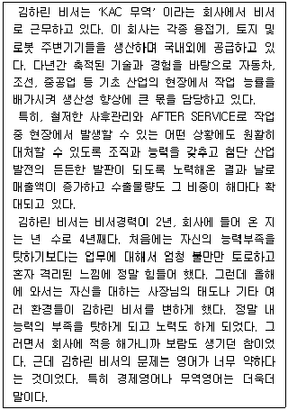
- 김하린 비서는 대한상공회의소의 무역영어 자격증 취득을 위해 노력한다.
- 김하린 비서는 업무역량 향상을 위해 비서협회 비서교육 과정에 등록하여 교육훈련 프로그램에 참가한다.
- 김하린 비서는 아침 일찍 출근하여 회사 근처 학원에서 직무능력 향상을 위한 영어 강의를 수강한다.
- 김하린 비서는 업무가 비교적 적은 시간을 활용하여 무역 영어 동영상 강좌를 수강한다.
(정답률: 45%)
5. 영업부 팀 비서인 김지영씨는 다른 전화를 응대하는 동안 걸려온 중요 거래처 김 이사의 긴급 전화를 받지 못하여, 상사로부터 지적을 받았다. 김지영씨에게 필요한 전화 부가 서비스는?
- 전화사서함, 다른지역번호 사용 서비스
- 부재중 안내, 발신전화 번호 확인
- 미팅콜, 대표번호
- 착신통화 전환, 통화 중 대기
(정답률: 73%)
6. 다음 중 외부 고객과의 바람직한 관계를 유지하기 위해 비서가 불만고객 응대시의 처리 순서로 가장 바람직한 것은?
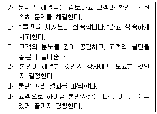
- 다 - 바 - 나 - 가 - 라 - 마
- 다 - 바 - 나 - 라 - 가 - 마
- 바 - 다 - 나 - 가 - 라 - 마
- 바 - 다 - 나 - 라 - 가 - 마
(정답률: 47%)
7. 다음 중 직장 내 대인관계의 자세로서 가장 부적절한 것은?
- 신입사원에게 기억해야 할 이름들, 사무실의 위치, 회사 방침들을 알려 주도록 한다.
- 회사의 업무 방식에 대해 신입사원이 어려움을 겪을 때에는 적극적으로 업무를 처리해 주면서 솔선수범을 보인다.
- 동료들과 상급자들에 대한 판단은 신입 사원 스스로가 알아서 판단하도록 한다.
- 신입으로 입사한 동료비서가 자신보다 나이가 많지만 회사의 공식적인 부분은 입사연차에 따르도록 한다.
(정답률: 46%)
8. 다음 중 상사의 일정을 관리하는 비서의 자세로 가장 적절한 것은?
- 다음 주에 상사와의 면담을 요청하는 사람에게 언제가 편한지 물어 보았다.
- 월요일 오전 시간에 상사의 외부 회의 일정을 수립하였다.
- 주말 중에 상사 일정 변경과 관련하여 상사에게 연락을 해야 할 경우 전화 문자메시지를 이용하였다.
- 금요일 저녁에 시내에서 중요한 저녁 모임이 있어 교외에 있는 대리점 방문은 오전으로 일정을 수립하였다.
(정답률: 41%)
9. 최근에는 컴퓨터의 일정관리 소프트웨어나 포털사이트의 일정 관리 프로그램과 스마트 기기의 발달로 스마트 폰의 일정 관리 앱을 다운 받아 일정관리 프로그램과 연동하여 상사와 비서의 일정을 손쉽게 업데이트하고, 공유하면서 일정을 관리하는 일이 많아졌다. 다음 중 일정관리 프로그램과 스마트 폰을 연동하여 사용하는 것에 대한 설명으로 옳지 않은 것은?
- 일정관리 프로그램과 스마트 폰을 연동하여 사용하는 것을 일정 동기화라고 한다.
- 일정관리 앱은 스마트폰 운영체제에 관계없이 앱을 다운 받아 실행시키면 동기화된다.
- 일정관리 앱은 Ms-outlook, June, Jorte, TikTik 등이 있다.
- 일정관리 앱을 동기화하기 위해서는 스마트폰 설정에서 캘린더 계정을 추가해야만 한다.
(정답률: 44%)
10. 다음은 비서가 관리해야 할 회의지원 내용들이다. 아래 설명 중 가장 적절하지 않은 것은?
- 음향기기 점검 : 회의장 어느 부분에서도 잘 들리는지, 소리가 울리거나 약해지는지, 앰프가 필요한지를 점검한다.
- 기록 : 녹음이 필요할 경우에는 참석자들에게 녹음기를 사용하고 있음을 밝히고 눈에 보이는 곳에 녹음기를 놓아두어야 한다.
- 음식과 음료 : 회의 중 참석자들이 원하는 음식과 음료를 주문하게 할 경우 음료는 충분히 제공될 수 있도록 종류 제한은 하지 않는 것이 좋다.
- 자리배치 : 주관기관의 소속직원은 뒷면에, 초청인사는 주로 앞면으로 배치하도록 좌석배치를 한다.
(정답률: 53%)
11. 다음은 2010년 서울에서 개최된 G20 정상회담 때의 국기게양 사진이다. 이처럼 국제회의 국기게양법에 대한 설명으로 적합한 것은?
- 참여국이 짝수일 경우, 개최국의 국기가 정가운데 위치하고 좌측부터 알파벳순으로 국기를 배치한다.
- 참여국이 홀수일 경우, 개최국의 국기가 정가운데 위치하고 좌측부터 알파벳순으로 국기를 배치한다.
- 참여국이 홀수일 경우, 개최국의 국기가 정가운데 위치하고 개최국을 기준으로 국가명 알파벳순으로 참여국의 좌우 순으로 배치한다.
- 참여국이 짝수일 경우, 개최국의 국기가 정가운데 위치하고 국가명 알파벳순으로 참여국의 좌우 순으로 국기를 배치한다.
(정답률: 43%)
12. 김영숙 상사는 성격이 매우 급한 편이라 상사의 성격을 이해하고 업무를 수행하고자 한다. 김영숙 비서가 상사를 보좌하는 태도로 가장 적절하지 않은 것은?
- 업무 진행 과정을 가능한 신속히 보고한다. 상사가 회의나 외출 등으로 자리를 비운 경우에는 스마트 폰을 이용해서 업무 진행과정을 보고 할 수 있다.
- 가능하면 처음에 제대로 일을 정확하게 하기 위해 업무 처리 시 업무 자료 준비에 우선순위를 두어 시간을 할애한다.
- 상사의 급한 성격에 맞추기 위해 업무 지시 내용과 비서의 판단력으로 업무를 우선 처리
- 성격이 급한 상사의 신뢰를 얻기 위해 김영숙 비서는 비서실의 파일링 체계를 개선한다.
(정답률: 48%)
13. 사장님은 아침 일찍 업무를 마무리한 후 우리 회사를 방문한 Mary&Young 의 마케팅상무님과 영업점 방문을 나가셨다. 사장님 외출 후 일어난 아래의 내용을 사장님께 휴대전화로 보고 하려고 한다. 다음 내용을 휴대전화 문자를 통해 보고할 때 가장 적절한 것은?
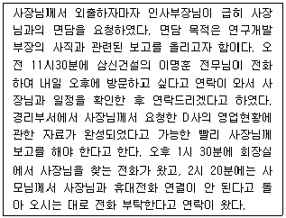
- 휴대전화 문자메시지를 보낼 때 약어 등의 사용은 자제하고 완벽한 문장으로 서술한다.
- 일이 발생한 시간 순서로 정리하여 전달한다.
- 전화한 사람이나 내방객의 이름과 소속은 문자에 포함하지만 용건은 내용이 많을 경우 문자메시지에 적지 않고 추후 구두로 보고한다.
- 전달한 내용이 많을 경우 번호를 붙여서 작성한다.
(정답률: 44%)
14. 대한증권 오상태 사장 비서 한선미는 CBN 방송국 PD로부터 증시 전망과 관련하여 상사를 인터뷰하고 싶다는 전화를 받았다. 한 비서의 응대 방법으로 가장 적절한 것은?
- 상사가 평소 TV 프로그램 인터뷰를 많이 해왔기 때문에 이번에도 흔쾌히 승낙하였다.
- 상사의 인지도와 이미지 관리를 위해 꼭 필요하다고 판단 되어 승낙하였다.
- 일정과 자세한 내용을 문서로 받아 꼼꼼히 확인한 후 적절치 않다고 여겨 거절하였다.
- 상사가 부재중이어서 확인 후 결정해야 하므로 확답을 주지 않았다.
(정답률: 69%)
15. 다음 중 상사의 개인 신상 자료를 관리하는 비서의 자세로 적절하지 않은 것은?
- 상사의 개인파일은 보안이 잘 되는 곳에 보관하거나 컴퓨터에 암호화하여 보관하여 외부로 유출되지 않도록 주의한다.
- 상사의 주요 기념일, 신체 사이즈(신장, 체중, 와이셔츠 크기, 허리둘레, 신발 크기, 골프 장갑 크기 등)도 개인 파일에 포함된다.
- 상사에 관한 새로운 신상 정보를 얻게 된 경우 내용을 추가한다.
- 사내 인사부에서 상사에 대한 개인정보를 요구할 경우 인비(人秘)문서로 작성하여 제출한다.
(정답률: 74%)
16. 출장 하루 전에 회사에 갑작스런 중요 사안이 발생하여 상사 출장 일정이 지연되게 되었다. 이에 대한 비서의 조치로 가장 적절하지 않은 것은?(16번 공통지문 문제)
- 대한항공사에 연락하여 항공권 양도 변경을 먼저 요청한 후 2월 3일 안으로 일정을 조정한 후 재예약을 요청한다.
- 중국에서의 일정과 관련된 기관 및 담당자에게 연락을 취해 사정을 말하고 일정이 재확정된 후 다시 통보하겠다고 한다.
- 2월 3일 전까지는 항공권이 유효하므로 항공사 변경 없이 여정변경만 하도록 한다.
- 일정 변경으로 인한 좌석type이 달라질 수 있음을 감안하여 예약 클라스 변경 여부도 미리 알아본다.
(정답률: 20%)
17. 다음 중 방문객 응대에 대한 비서의 행동으로 가장 바람직한 경우는?
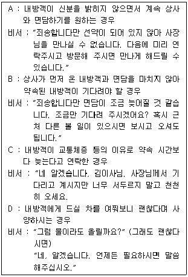
- A
- B
- C
- D
(정답률: 65%)
18. 다음 중 경조사 관련 한자의 조합이 잘못된 것은?
- 賻儀, 謹弔, 弔儀
- 華婚, 結婚, 聖婚
- 就任, 榮轉, 昇進
- 報告, 回甲, 壽宴
(정답률: 39%)
19. 평소 의전을 중시 여기는 상사를 위해 비서 A양은 의전 기본 원칙들을 숙지하였다. 다음 의전 관련 내용 중 일반적인 원칙과 가장 거리가 먼 것은?
- 의전의 예우 기준은 헌법 등 법령에 근거한 공식적인 것을 기준으로 하고 선례와 관행 기준 예외는 두지 않는 것이 원칙이다.
- 공적직위가 없는 인사의 서열기준은 전직(前職)과 연령을 기준으로 하되 행사 관련성도 고려한다.
- 정부기관 인사가 참여했을 경우, 직위가 같을 때는 정부조직법상의 순서를 기준으로 자리배치를 한다.
- 태극기와 외국기를 교차 게양할 경우는 밖에서 보아 태극기의 깃대는 외국기의 깃대 앞쪽으로 한다.
(정답률: 43%)
2과목: 경영일반
20. 무한책임사원만으로 구성되는 회사로 사원은 회사의 채무를 회사채권자에 대하여 직접 연대하여 변제할 무한 책임을 지는 형태의 회사는 다음 중 무엇인가?
- 합명회사
- 합자회사
- 주식회사
- 유한회사
(정답률: 59%)
21. 경영환경의 개념에 대한 설명으로 가장 적절하지 않은 것은?
- 경영환경은 인간의 생산활동을 뒷받침하는 외부상황이라 말할 수 있다.
- 기업과 환경과의 관계는 정태적이다.
- 현대기업은 환경과 끊임없는 상호작용을 하는 시스템이다.
- 기업은 생존을 위하여 외부환경의 변화에 적절히 적응하여야 한다.
(정답률: 58%)
22. 기업의 환경에 대한 설명 중 가장 적절하지 않은 것은?
- 기업의 경제적 환경 요인으로는 정부, 종업원, 노동조합, 서비스 제공자 및 공급자 등의 이해관계자 집단이 있다.
- 기업의 외부환경 중 일반환경은 기업에 전혀 영향을 주지 않는다.
- 기업환경의 측면에서 고객의 역할은 중요하기 때문에 고객에 대한 경영전략이 모색되어야 한다.
- 기업의 정치적 환경은 경제적 환경을 외부에서 에워싸고 있는 기업환경으로, 정부가 대표적인 예라고 할 수 있다.
(정답률: 74%)
23. 기업의 사회적 책임에 대한 설명으로 가장 적절하지 않은 것은?
- 기업의 사회적 책임은 법과 주주들이 요구하는 것을 넘어서 사회 전체에게 바람직한 장기적 목표를 추구할 의무까지 포함한다.
- 보이지 않는 손의 역할이 산업혁명 당시보다 강화되었다.
- 기업의 사회적 책임 중 윤리적 책임이란 법적으로 강요 되지는 않지만 사회가 기대하고 요구하는 바를 충족시키는 것을 의미한다.
- 기업의 사회적 책임 중 대내적 책임은 종업원에 대한 책임을 들 수 있다.
(정답률: 28%)
24. 기업의 인수합병에 대한 설명으로 가장 적절하지 않은 것은?
- 둘 이상의 기업이 하나로 통합되어 단일 기업이 되는 것을 합병이라 한다.
- 인수합병을 통해 빠른 성장과 시장에의 조기진입이 가능하다.
- 인수합병을 통해 취득자산 가치와 재무체질이 강화되고, 내적 성장이 가능하게 된다.
- 해외기업의 인수합병을 통해 생산거점 및 원자재의 안정적인 공급처 확보, 해외시장 개척을 한다.
(정답률: 51%)
25. 다음 중 주식회사의 특징에 대한 설명으로 가장 적절하지 않은 것은?
- 주식회사는 소수의 출자자로부터 자본을 모으는 것이 아니라 널리 일반 대중에 산재하는 자본으로 대규모의 자본을 조달하는 기업형태이다.
- 주식회사는 회사의 지분 또는 주식 모두가 개인 일인의 소유에 속한다.
- 주식회사의 주주는 주주총회에 참석하여 의결권을 행사할 수 있으며, 이익배당을 청구할 수 있다.
- 주식회사는 기업의 출자자와 경영자가 분리되어 경영자가 기업을 지배하는 소유와 경영의 분리라는 특징을 보인다.
(정답률: 43%)
26. 다음의 경영 관리 과정 중에서 필요한 자원을 조달하고 할당하는 것으로 가장 적절한 것은?
- 계획
- 조직화
- 지휘
- 조정
(정답률: 18%)
27. 다음 중 마이클 포터의 본원적 경쟁전략모형에 대한 설명으로 가장 적절하지 않은 것은?
- '본원적'의 의미는 제조, 유통, 서비스 등 모든 분야에서 사용할 수 있음을 나타낸다.
- 집중화전략은 특수한 틈새시장이나 특정 지역에서 경쟁하는 것을 말한다.
- 차별화전략은 규모의 경제를 통한 소품종대량생산을 제공한다.
- 원가주도전략은 경쟁기업보다 낮은 가격으로 제품과 서비스를 제공하는 것을 의미한다.
(정답률: 46%)
28. 다음 중 공식조직과 비공식조직에 대한 설명으로 가장 적절하지 않은 것은?
- 공식조직은 보통 조직도로 알 수 있다.
- 공식조직은 호손실험 이후에 중요성이 부각되었다.
- 비공식 조직은 학연, 지연, 기호 등에 의한 자연발생적 조직으로 종업원들의 직무만족감, 소속감 등 감정의 논리에 입각하고 있다.
- 비공식조직은 종업원들에게 귀속감과 만족감을 제공한다.
(정답률: 40%)
29. 일하기 싫어하고 책임지기 싫어해서 엄격한 통제를 해야 하는 사람이 있는 반면, 외부의 통제나 처벌의 위협 보다는 적절한 동기 부여를 통해 자율적이고 창의적으로 움직이는 사람이 있음을 주장한 동기 부여 이론으로 다음 중 가장 적절한 것은?
- 맥그리거의 XY이론
- 부룸(Vroom)의 기대 이론(Expectancy theory)
- 애덤스(Adams)의 공정성 이론(Equity theory)
- 허츠버그(Herzberg)의 2요인 이론(Two-factor theory)
(정답률: 45%)
30. 다음 중 리더십이론에 대한 설명으로 가장 적절하지 않은 것은?
- 거래적 리더십은 리더가 부하의 노력과 성과에 대해 보상하는 것으로 리더와 부하간의 교환거래관계에 바탕을 두고 있다.
- 변혁적 리더십은 비전을 제시하고 구성원들이 높은 기대를 갖도록 동기부여 시키는 리더십이다.
- 카리스마적 리더십은 개인이 가진 영적인, 심적인, 초자연적인 특질이 있을 때 구성원이 이를 신봉함으로써 생기는 리더십이다.
- 서번트 리더십은 구성원들이 다른 사람뿐 아니라 스스로를 통제할 수 있는 힘과 기술을 갖도록 도와주는 리더십이다.
(정답률: 20%)
31. 다음 중 마케팅믹스(Marketing Mix)요소인 4P에 해당하지 않는 것은 무엇인가?
- 제품(product)
- 가격(price)
- 유통(place)
- 기획(planning)
(정답률: 55%)
32. 다음 중 의사소통에 대한 설명으로 가장 적절하지 않은 것은?
- 의사소통은 한 사람으로부터 다른 사람에게 정보나 의사가 전달되는 과정이다.
- 효과적인 의사소통은 송신자가 의도하는 메시지와 수신자가 해석하는 의미가 일치하는 것을 말한다.
- 제안제도나 고충제도는 상향적 의사소통 네트워크이다.
- 몸짓, 표정, 악수 등의 비언어적 의사소통으로는 의사전달이 이루어질 수 없다.
(정답률: 65%)
33. 다음 중 인적자원의 교육훈련과 경력관리에 대한 설명으로 가장 적절하지 않은 것은?
- 모집과 선발을 거쳐 인력을 확보하게 되면 이들의 능력을 향상시켜 맡은 직무를 보다 효율적으로 수행할 수 있도록 적절한 교육훈련과 경력관리가 필요하다.
- 교육훈련 방법 중에서 직무 및 작업현장을 벗어나 실시하는 것은 OJT(on-the-job training)다.
- 경력관리는 기업의 요구와 개인의 욕구가 일치될 수 있도록 각 개인의 직업경력을 장기적으로 개발하는 활동을 말한다.
- 최근 노동시장의 고용유연화의 영향으로 평생직장의 개념이 사라지면서 점차 스스로 자신의 경력 관리를 위해 노력해야 할 필요성이 증가되고 있다.
(정답률: 64%)
34. 다음 중 인적자원관리에 대한 설명으로 가장 적절하지 않은 것은?
- 인적자원관리는 인적자원의 확보, 개발, 활용, 보상, 유지와 관련된 관리활동을 의미한다.
- 인적자원을 정기적으로 평가하여 인사관리 및 성과금과 같은 보상제도에 적용할 필요가 있다.
- 선발 배치된 후에 이루어지는 배치전환, 승진, 이직과 같은 인사이동은 종업원의 최대 관심사 중의 하나이다.
- 인적자원관리는 개개인의 잠재적 능력을 개발하는데서 출발하므로, 기업의 발전과 결합되지 않아도 그 가치가 있다.
(정답률: 73%)
35. 기업의 경영분석 지표에 대한 다음 설명 중 가장 적절하지 않은 것은?
- 성장성 지표 : 회사의 규모나 경영성과가 전년에 비해 어느 정도 증가하였는가를 측정하는 지표이다.
- 안정성 지표 : 회사가 어느 정도 안정되어 있는가를 측정 하는 지표이며, 안정성 지표를 수년간에 걸쳐 추세를 분석하게 되면 어떠한 방향으로 나아가고 있는지 여부를 알 수 있으나, 불안정한 경우 원인 파악은 불가능하다.
- 활동성 지표 : 활동성이란 기업의 영업활동이 어느 정도 활발하게 이루어지고 있는가를 측정하는 지표로 일반적으로는 '회전율'이라고 한다.
- 수익성 지표 : 수익성이란 회사가 벌어들이는 수익능력을 측정하는 지표로서 손익계산서에 나타나는 각 구간별 이익을 기준으로 관련되는 항목과의 비율로 계산된다.
(정답률: 50%)
36. 다음에서 설명하는 정보시스템으로 가장 적절한 것은?
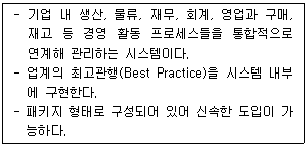
- ERP(Enterprise Resource Planning)
- EIS(Executive Information System)
- SIS(Strategic Information System)
- DSS(Decision Support System)
(정답률: 60%)
37. 다음의 시사 용어에 대한 설명 중 가장 적절하지 않은 것은?
- 유비쿼터스 컴퓨팅 : 현재의 컴퓨터에 어떠한 기능을 추가하거나 컴퓨터 속에 무엇을 집어넣는 것이 아니라, 컵, 자동차, 안경, 신발과 같은 일상적인 사물에 각각의 역할에 부합되는 컴퓨터를 집어넣어 사물끼리도 서로 커뮤니케이션을 하도록 해주는 것이다.
- 지적소유권 : 문학 및 과학 작품, 연출, 예술가의 공연·음반 및 방송, 발명, 과학적 발견, 공업의장·등록상표·상호 등에 대한 보호권리와 공업·과학·문학 또는 예술분야의 지적활동에서 발생하는 기타 모든 권리를 포함한다.
- 우리사주 신탁제도 : 기업이 종업원의 동의를 받아 퇴직금과 성과 으로 주식투자 전용펀드를 설정해 자사주나 기타 주식에 투자한 뒤 이익을 분배하는 제도이다.
- 스톡옵션 : 기업이 평사원에게 시중 가격으로 주식을 판매할 수 있는 권리를 말한다.
(정답률: 42%)
38. 다음 용어에 대한 설명으로 가장 적절하지 않은 것은?
- 전략적 제휴 : 2개 이상의 기업들이 각자가 가지고 있는 고유의 경쟁우위를 바탕으로 상호보완적이고 지속적인 협력관계를 형성함으로써 다른 기업들에 대해 경쟁우위를 확보하려는 경영전략
- 프랜차이즈 : 상품을 제조하고 판매하는 메이커 또는 판매업자가 체인본부를 구성, 독립소매점을 가맹점으로 지정하여 그들 가맹점에게 일정한 지역 내에서 독점적 영업권을 부여하는 것
- 시스템통합 : 기업이 필요로 하는 정보시스템에 관한 기획에서부터 개발과 구축, 운영까지의 모든 서비스를 제공하는 것
- 아웃소싱 : 제품의 전체적인 공급과정에서 기업이 일정한 부분을 통제하는 전략으로 다각화의 방법
(정답률: 57%)
39. 다음에서 설명하는 시사용어로 가장 적절한 것은?
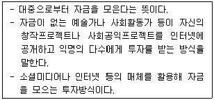
- 핀테크
- 인터넷 뱅킹
- 크라우드 펀딩
- 사물인터넷
(정답률: 64%)
3과목: 사무영어
40. Which of the followings is the most appropriate department names for the blanks ⓐ and ⓑ?
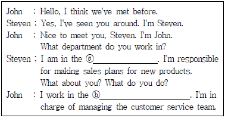
- ⓐ R&D Department - ⓑ Marketing Department
- ⓐ Customer Service - ⓑ Online Shopping Department
- ⓐ Advertising Department - ⓑ Marketing Department
- ⓐ Sales Department - ⓑ Customer Service
(정답률: 63%)
41. Read the following phone conversation and choose one which is the most grammatically correct.
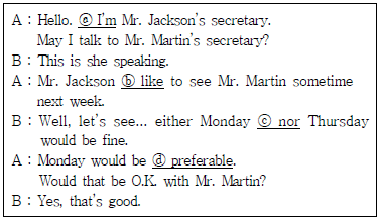
- ⓐ I'm
- ⓑ like
- ⓒ nor
- ⓓ preferable
(정답률: 30%)
42. Which of the words ⓐ~ⓓ below is not correct?
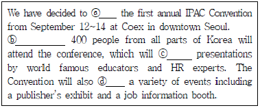
- ⓐ held
- ⓑ Approximately
- ⓒ feature
- ⓓ host
(정답률: 32%)
43. Choose one which has a grammatical error.
- I would prefer to have a window seat.
- I'd like to book a ticket to Beijing.
- How long are you planned to stay in London?
- Would you give me a return ticket?
(정답률: 40%)
44. Read the following statements about addressing letter envelope and choose the one which is not appropriate one.
- In the upper-left hand corner should be sender's name, and underneath that should be the return address.
- In the upper-right hand corner should be the postage stamp.
- In the middle-center should be the recipient's name and recipient's address.
- If you are writing to a different country, make sure you put it at on the first line of your return address and the recipient's address.
(정답률: 16%)
45. Which of the followings is the most appropriate expression for the blanks ⓐ and ⓑ?
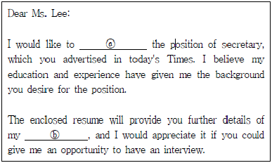
- ⓐ apply for, ⓑ qualifications
- ⓐ submit, ⓑ requirement
- ⓐ enter, ⓑ everything
- ⓐ apply to, ⓑ personal history
(정답률: 48%)
46. Choose one which is the most appropriate subject of the message.
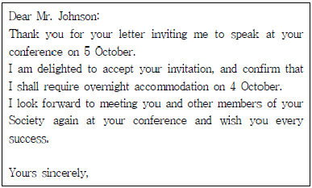
- Conference invitation
- Declination of invitation
- Announcement of invitation
- Acceptance of invitation
(정답률: 33%)
47. According to the email, which one is not true?
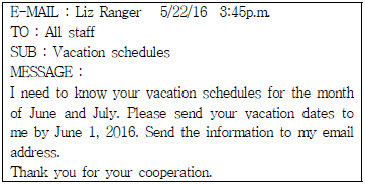
- The receipients of the email are all staff.
- The message is about the staff's vacation dates.
- The staff should send the information before June 1.
- The staff should reply in person.
(정답률: 40%)
48. Which of the followings is not related to others?
- Are you with me?
- Does that seem to make sense?
- Are you following me?
- Can it wait?
(정답률: 37%)
49. Which of the followings is the most appropriate expression for the blanks ⓐ and ⓑ?
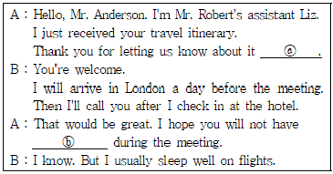
- ⓐ ahead of time, ⓑ jet lag
- ⓐ in advance, ⓑ turbulence
- ⓐ afterward, ⓑ time difference
- ⓐ later, ⓑ sleepiness
(정답률: 35%)
50. Choose one which is the least appropriate expression for the blank ⓐ?
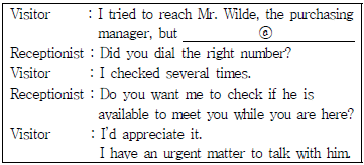
- nobody answered the phone.
- I was directly connected to the line.
- I only got a busy signal.
- his extension line has been busy.
(정답률: 35%)
51. Read the following dialog and choose one which is true.
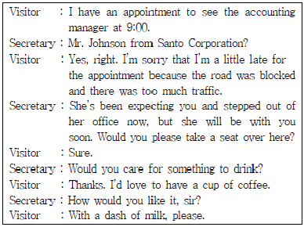
- Mr. Johnson은 사전 약속 없이 방문하였다.
- The accounting manager는 Mr. Johnson의 방문을 예상하지 못하였다.
- 비서는 Mr. Johnson을 응대할 시간이 없다.
- Mr. Johnson은 약속 시간에 늦었다.
(정답률: 56%)
52. Choose one which is the least appropriate expression for the blank.
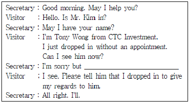
- Mr. Kim is expecting you now.
- Mr. Kim is talking with his boss.
- Mr. Kim is in a meeting now.
- Mr. Kim is taking a telephone call.
(정답률: 21%)
53. Read the following dialogue and choose one set which is arranged in correct order.
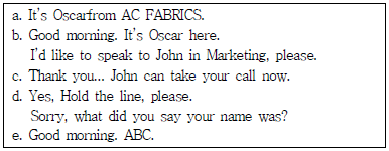
- b - e - a - c - d
- a - e - b - c - d
- e - b - d - a - c
- c - a - e - b - d
(정답률: 64%)
54. Choose the most appropriate sentence for the blank in the following conversation.
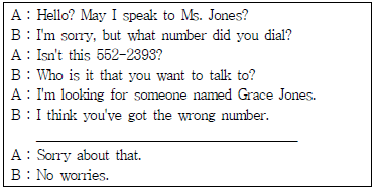
- No one is working for Grace Jones.
- There's nobody with that name here.
- Grace Jones has just stepped out.
- I'll transfer your call to her.
(정답률: 46%)
55. Choose the correct inside address in a business letter.
- Mr. Peter Lee
Our Life Inc.
Sales Manager
1494 Baird St.
CA 92882, Corona - Mr. Peter Lee
1494 Baird St.
Corona, CA 92882
Our Life Inc.
Sales Manager - Mr. Peter Lee
Sales Manager
Our Life Inc.
1494 Baird St.
Corona, CA 92882 - Our Life Inc. / Sales Manager
Mr. Peter Lee
Corona, CA 92882
1494 Baird St.
(정답률: 43%)
56. Choose the most appropriate word for the blank.
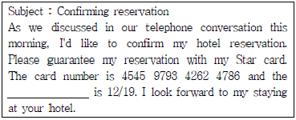
- expiration date
- due date
- arrival date
- check out date
(정답률: 25%)
57. According to the conversation, what time will the boss be joining a meeting with Mr. Green?
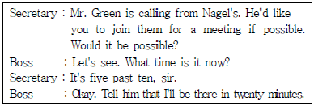
- 5시 30분
- 5시 10분
- 10시 25분
- 10시 30분
(정답률: 27%)
58. Which statement is TRUE to Mr. Kim's itinerary below?
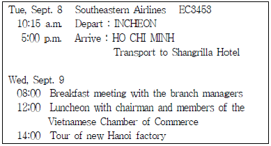
- Mr. Kim made a stop over in Shanghai, China.
- Mr. Kim will have breakfast at Shangrilla Hotel on the first day of trip.
- He will have lunch with Vietnamese business people on the second day.
- He will be meeting with branch directors at the factory.
(정답률: 46%)
59. Which set of English sentence and its translation does not match correctly?
- Could you tell me about employee benefits?
직원 복지 혜택에 관하여 말해 주실 수 있나요? - This is the perfect time for visitors to explore Korea's outstanding art museums.
지금은 방문객들이 한국의 우수한 미술박물관을 찾아보기에 완벽한 시간입니다. - What conditions would you like the company to consider?
회사가 당신에게 원하는 조건은 무엇입니까? - The fax message to be transmitted is comprised of two pages.
전송할 팩스 메시지는 두 장으로 구성되어 있습니다.
(정답률: 36%)
4과목: 사무정보관리
60. A사이트에서 제공하여 사용하고 있는 메일계정의 전자 우편을 B사이트의 외부 메일 계정으로 등록하여 수신받기 위해 필요한 전자 우편 관련 프로토콜은?
- SMTP
- POP3
- TCP
- FTP
(정답률: 29%)
61. 다음은 축산나라의 사장 홍길동이 대표자를 홍말자로 변경하는 허가 신청서로 현재 부천시 원미구청에 접수한 문서이다. 다음 중 문서의 분류가 가장 적절하지 않은 것은?
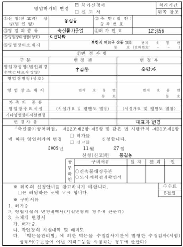
- 목적에 의한 분류로 공문서에 속한다.
- 성질에 의한 분류로 민원문서에 속한다.
- 기능에 의한 분류로 특허문서에 속한다.
- 처리단계에 의한 분류로 접수문서에 속한다.
(정답률: 43%)
62. 다음 문서에 관한 설명으로 가장 옳지 않은 것은?
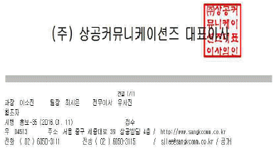
- 상공커뮤니케이션즈에서 발신하는 문서이다.
- 유시진 전무이사가 이 문서의 전결권자이다.
- 대표이사가 부재중이여서 문서를 전결하였다.
- 이 문서는 수신자에게 아직 접수되지 않았다.
(정답률: 28%)
63. 대한자동차는 매달 'New Car'라는 자동차 매거진을 발행한 후 고객들에게 일괄 발송한다. 다음 중 이러한 경우에 가장 유용한 우편제도는 무엇인가?
- 우편요금 감액제도
- 등기우편 제도
- 내용증명 제도
- 민원우편 제도
(정답률: 45%)
64. 다음 중 감사장을 쓰는 상황에 해당하는 것은?
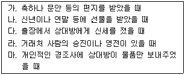
- 모두
- 가, 나, 다, 라
- 가, 나, 다, 마
- 가, 나, 다
(정답률: 28%)
65. 다음 중 문서정리에 대한 설명으로 가장 옳지 않은 것은?
- 문서 정리 방법에 대한 회사 내부 규정을 제정해 표준화 시킨다.
- 필요한 문서를 신속히 찾을 수 있도록 문서가 보관된 서류함이나 서랍의 위치를 명시해
- 문서정리 후 1년 동안 찾지 않은 문서는 정보의 가치가 없으므로 폐기한다.
- 문서 보존기간이 끝난 문서는 즉시 폐기한다.
(정답률: 60%)
66. 다음 중 문서관리의 범주에 포함되는 것은?
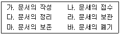
- 다, 라
- 다, 라, 마
- 다, 라, 마, 바
- 가, 나, 다, 라, 마, 바
(정답률: 44%)
67. 다음 중 엑셀을 활용한 명함 데이터베이스 관리의 특징으로 가장 잘못된 것은?
- MS-엑세스나 Outlook의 주소록에 저장된 명함 데이터를 엑셀로 가져올 수 있다.
- 명함 정보를 찾기 쉽고, 정보의 수정이 수월하다.
- 명함 내용을 입력하고 이름순이나 회사명순으로 정렬할 수 있다.
- 엑셀은 OLE개체, 일련번호, 첨부파일 등 다양한 데이터 형식을 지원한다.
(정답률: 58%)
68. 종교단체에 비서로 일하고 있는 최비서는 단체의 기록물을 관리하기 위해 편지별, 주보별, 회보별, 소식지별, 회의록별, 사진 앨범별, 그림별로 묶어 분류하였다. 이에 해당하는 문서분류 방식은?
- 유형별 분류
- 알파벳순 분류
- 연대기순 분류
- 주제별 분류
(정답률: 50%)
69. 다음 중 전자문서에 대한 설명으로 가장 적절하지 않은 것은?
- 전자적으로 생산되지 않은 문서를 전자화한 것은 전자 문서에 속하지 않는다.
- 전자문서관리시스템에 의하여 전자적으로 생산·관리된 문서가 전자문서이다.
- 이미지 또는 영상 등의 디지털 콘텐츠도 전자문서에 포함된다.
- 전자문서의 국제표준과 우리나라 전자문서 국가표준은 PDF이다.
(정답률: 54%)
70. 다음은 기업 임원의 비중에 관한 표이다. 이에 대한 설명으로 가장 올바른 것은?
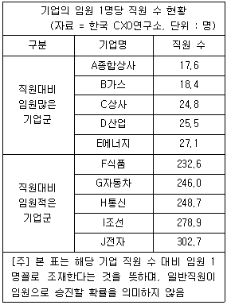
- A종합상사가 직원 수 대비 임원 비율이 가장 높다.
- J전자는 임원 수 대비 직원 비율이 가장 낮다.
- E에너지는 F식품보다 직원의 수가 적다.
- C상사의 임원의 수가 H통신의 임원보다 10배 많다.
(정답률: 25%)
71. 다음 설명에 해당하는 시스템은 무엇인가?
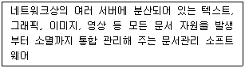
- EDMS
- EDI
- EDIFACT
- EC
(정답률: 50%)
72. 상사에게 필요한 내 ·외부의 정보를 적시에 제공하기 위해 강비서는 다양한 경로를 통해서 정보를 수집하고 있다. 강비서의 정보 수집 방법으로 적절하지 않은 것끼리 묶인 것은?
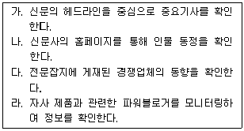
- 가
- 라
- 가,라
- 없다
(정답률: 42%)
73. 다음 중 인터넷을 이용한 전자상거래의 효과로 가장 거리가 먼 것은?
- 다양한 정보 습득과 선택의 자유
- 기밀성과 익명성 보장
- 구매자의 비용절감
- 물리적 제약 극복
(정답률: 42%)
74. 다음 중 정보 보안 실천을 위한 행동으로 올바른 업무처리를 한 비서는?
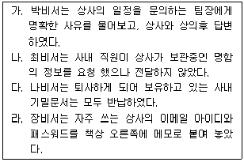
- 없다
- 박비서, 나비서
- 박비서, 최비서, 나비서
- 모두
(정답률: 32%)
75. 다음에서 설명하고 있는 최신 사무 기술은 무엇인가?
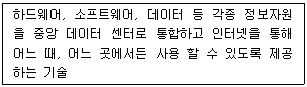
- 데이터웨어하우스
- 유비쿼터스
- 클라우딩 컴퓨팅
- 모바일 오피스
(정답률: 42%)
76. 손비서는 사무기기를 구매하면서, 사무기기와 해당 소모품을 함께 구매하기로 하였다. 잘못된 구매 사례는?
- 링제본기와 펀치(천공기)를 함께 구매하였다.
- 전자칠판과 보드마커를 함께 구매하였다.
- 어음·수표발행기기와 잉크를 함께 구매하였다.
- 출퇴근기록기와 출퇴근카드 100매를 함께 구매하였다.
(정답률: 16%)
77. 다음은 1월 10일자 기준으로 미국 달러 대비 주요화폐 가치의 등락률을 표현한 차트이다. 설명이 가장 옳지 않은 것은?
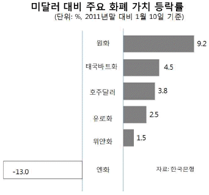
- 원화 가치의 등락률은 주요 통화 중 가장 높다.
- 원화의 절상률이 9.2%에 달했다.
- 미국 달러대비 원화의 가치가 엔화의 가치보다 높다.
- 엔화는 13%나 가치가 절하되었다.
(정답률: 46%)
78. 다음 중 밑줄 친 표현이 가장 올바른 것은?
- 한국 연구진들이 유발성인슐린 단백질을 발견했다.
- 맡은 바 임무에 충실 한다는 것, 참 간단하고 쉬운 일인 것 같지요.
- 그 지역의 거래방법은 서로 상의 후 결정하고 싶습니다.
- 삼화건설에서 무려 30년 근속을 기록하였다.
(정답률: 33%)
79. 다음 컴퓨터 관련 범죄 예방을 위한 방법 중 가장 바람직하지 않은 업무태도는?
- 해킹 방지를 위한 보안 프로그램을 설치하고 정기적으로 갱신한다.
- 보호 패스워드를 시스템에 도입하여 수시로 변경한다.
- 백신 프로그램을 설치하고 자동 업데이트 기능을 설정한다.
- 인터넷을 통해 자료를 다운받아 사용하지 않는다.
(정답률: 61%)